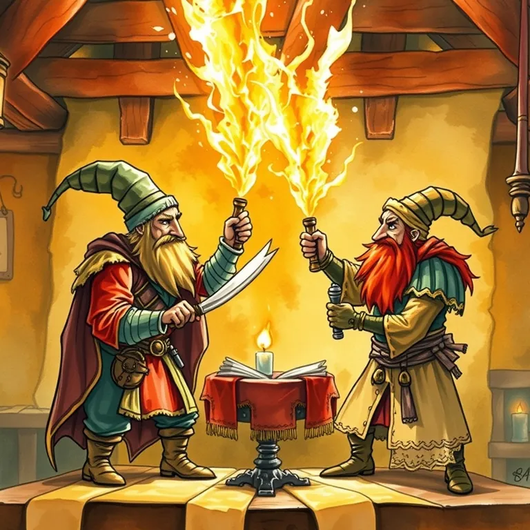

Copy.ai vs. Jasper AI

One scribe wrote the joke. The other wrote three variations and asked if the party wanted a fourth.
Copy.ai vs. Jasper AI is best used for generating first-draft marketing copy, ad variations, or product descriptions when you need volume more than a single perfect line. A merchant guild needs a hundred slightly different pitches for a hundred slightly different customers. These scribes crank out drafts fast. It lands at #30 of 51 on Solos Gems (6.5/10) for copywriting.
One scribe wrote the joke. The other wrote three variations and asked if the party wanted a fourth. Neither one is going to replace the bard, but both save the bard some drafting time.
- Value for price6.5/10
- Capability6/10
- Ease of use7/10
- Trial safety7/10
Best used for
Generating first-draft marketing copy, ad variations, or product descriptions when you need volume more than a single perfect line.
How it helps the realm
A merchant guild needs a hundred slightly different pitches for a hundred slightly different customers. These scribes crank out drafts fast.
Boons
- Both generate usable first drafts fast, which beats staring at a blank scroll.
- Multiple variations per prompt make A/B testing marketing copy far easier.
- Templates cover most common marketing formats out of the box.
Curses
- Neither replaces a skilled copywriter's final polish; treat outputs as drafts, not finished work.
- Generic prompts produce generic copy; getting good results takes some prompt-crafting skill.
Common questions
Which one is better for long-form content versus short ads?
Jasper generally handles longer-form content better; Copy.ai leans toward shorter marketing snippets.
Do I need to heavily edit the output?
Usually yes. Treat both as fast first-draft generators rather than final copy.
Can either learn my brand's specific voice?
Both offer some brand-voice customization, though results vary and need fine-tuning.